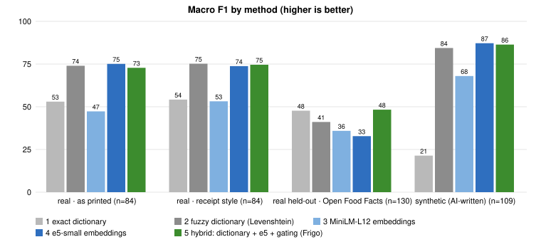
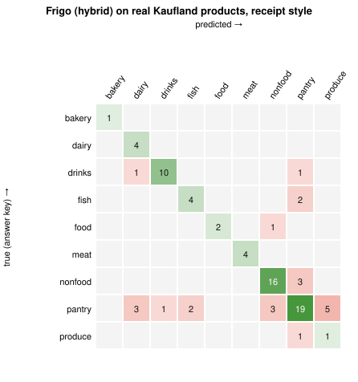

Arhitectura sistemului · Schema bazei de date (ERD) · Rezultatele testelor pe date reale
1. Arhitectura sistemului
2. Schema bazei de date (ERD)
3. Macro-F1 pe metode (date reale și sintetice)

Pe date reale, hibridul Frigo ≈ dicționarul fuzzy (Kaufland 74,6 vs 75,2; set ținut deoparte 48,3 vs 47,7) → H1 respinsă. Pe datele sintetice AI-ul pare mult mai bun: testele sintetice supraestimează.
4. Pragul de încredere: acoperire vs precizie
0,86 → 78 % din rânduri, 79 % corecte; 0,90 („sigur”) → 40 % din rânduri, 88 % corecte.
5. Matricea de confuzie (Kaufland, stil bon)

Viteză: 12–14 ms/rând în browser (laptop), 1,9 ms în Node.js. Model: 118 MB, o singură descărcare (H3 confirmată).